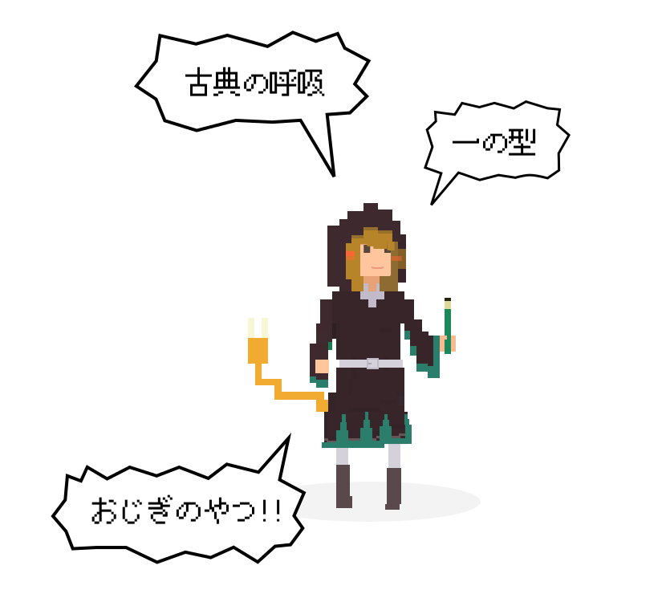

1. 解决（Resolution）
1. 解决（Resolution）
在之前的“和弦的功能分类”中，我们将和弦扮演的角色划分为了 T、D、S 三种功能。

其中，究竟如何平稳着陆到 T（主和弦），在思考和弦进行的聚合感与流动感时至关重要。
在音乐理论中，“从不稳定音响走向稳定音响”、“由碰撞混浊的声音转为纯净清澈的声音”等这种“紧张状态得到缓和”的流动过程，被统称为解决（Resolution）。
解决 (Resolution) : 由具有不稳定特性的音所制造出的紧张感，通过行进到稳定的音而得以化解。 : 在旋律理论中该词同样具有相同含义，不仅限于和弦进行。动词形式为“Resolve”。
在和弦理论中，尽管各流派在字面解释上略有出入，但归结起来，最终达到 T 功能的和弦通常都被视作完成了“解决”[34]。
2. 终止式（Cadence）
和弦进行的“解决”在音乐理论中常被比喻为文章中的“标点符号”——它是标志着音乐告一段落的鲜明分界点。而我们将通向最终解决的这几个和弦构成的语汇组合，称为终止式（Cadence）。
终止式 (Cadence) : 指在音乐展开过程中赋予听者一定终结感、休止感的乐句（和弦进行）收尾固定程式[35]。 : “Cadence”一词追根溯源来自拉丁语中表示“落下”的动词 cadere，与 cascade（瀑布）和 decay（衰减）同源。
正如我们在绪论中的历史篇所讲，不仅爵士理论如此，古典乐理更是把“程式套路（型）”看得无比重要。

正因如此，在这些传统理论中，存在着极多拥有专属名称的经典终止式：
-
正格终止（Authentic Cadence）
-
变格终止（Plagal Cadence）
-
完全终止（Perfect Cadence）
-
不完全终止（Imperfect Cadence）
-
半终止（Half Cadence）
-
阻碍终止 / 伪终止（Deceptive Cadence）
-
完整爵士终止（Full Jazz Cadence）
-
爵士半终止（Jazz Half Cadence）
-
阳性终止（Masculine Cadence）
-
阴性终止（Feminine Cadence）
-
皮卡第终止（Picardy Cadence）
-
弗里吉亚终止（Phrygian Cadence）
-
安达卢西亚终止（Andalusian Cadence）
-
悲怆终止（Pathetic Cadence）
-
……
但坦率地说，在招式套路高度自由的当代，我们实在没有必要去死记硬背所有这些名称。不过，自由派音乐理论秉持着全面介绍通用乐理内容的承诺，依然会为大家梳理最常见的几种。比起死记名字，更希望大家能够去亲身体验各自不同的声响质感。
3. 大调的终止式
正格终止（Authentic Cadence）
首先，V → I 是最为核心的基本形态，被称为正格终止（Authentic Cadence）。
I V I
这也是“起立、敬礼”时的经典伴奏形态，能够给人留下极其清晰明确的“乐句已圆满结束”的收拢印象。
变格终止（Plagal Cadence）
与正格终止相对并列的是 IV → I 的形态，这种程式被称为变格终止（Plagal Cadence）（亦称教会终止或阿门终止）。
I IV I
它的性格截然不同，营造出一种柔和温润的收尾感。
伪终止 / 阻碍终止（Deceptive Cadence）
对于将大调与小调壁垒分明的古典音乐来说，V 和弦没有走向预期的 I，而是拐向了 VIm，被视为展开上的“背叛”，因而被称为伪终止（Deceptive Cadence）或阻碍终止。
I V VIm
在古典作曲法中，人们认为 VIm 不足以担当结束乐段的大任，大调就应当堂堂正正由 I 来收尾。然而在大小调频繁交融、普及了“调性一元论”的当今现代音乐中，停在 VIm 并不带有任何“虚伪”色彩——比如整段就靠 1-4-5-6 不断循环直至段落结束早已司空见惯。选用“伪”这个字眼，多少能让人感受到昔日陈旧传统的条条框框。
半终止（Half Cadence）
最后，故意不让段落落在 T 功能上，而是以 V 结束段落，这在音乐中相当于“逗号”的作用。这种形态被称为半终止（Half Cadence）。
I IV V
就像这样，该段落自身不释放紧张感就直接结束，进而引出下一个段落。虽然让人难免会犯嘀咕：“这也配叫‘终止’吗……？”，但在传统理论看来，它确实起到了类似“逗号”一般的停顿断句效果。
在流行音乐中，副歌之前的导歌（Pre-chorus）最后往往停在 V 级以蓄积情绪张力，然后在副歌开头爆发解决——这种套路随处可见：
I IV I IV I IV V
正格终止、变格终止、伪终止（阻碍终止）、半终止——这四种便是大众所熟知的最具有代表性的经典终止法。
4. 小调的终止式
前文提到过，古典音乐对大调和小调有着严格区分，并各自规定了相应的规范。在终止式方面这一点尤为关键：小调自有小调的专属套路[36]。
小调的正格终止
顺理成章地推导，在小调中，IIIm → VIm 似乎应当扮演正格终止的角色……
VIm IIIm VIm
但实际上，作为制造终结感的手法，传统上认为它比起大调“太弱了”。这究竟差在哪里呢？让我们重新对比一下大调的 V → I：


请观察各自最高音的移动：在大调中，面对中心音 Do，上方音是按 Si → Do 的之差行进的；而在以 La 为中心的小调世界中，Sol → La 的移动却是之差。 虽然这在旋律篇中会有更深入的讲解，但音符连接是全音还是半音有着根本性的差异——半音级进的平滑牵引力在决定音乐动势与解决感上起到了决定性的主导作用。
因此，V 和弦与 I 和弦能以极其平顺的动势紧密相连，彼此情同手足；相比之下，IIIm 与 VIm 之间的关系就显得有些生疏冷淡了。
正因如此，在古典与爵士理论中，IIIm 往往被评价为“仅具备微弱的属功能”或“从定义上讲算不上属功能，但在音乐句法上勉强能充当属和弦的替补”，受到近乎“鸡肋”般的冷落待遇[37]。
那该怎么办呢？古典音乐给出的解决方案是：强制把 Sol 升为 Sol♯，让它强行贴近 La。反映在和弦上，就是将 IIIm 进行性质变换，升格为大三和弦的 III。

临时加一个升号，单在这一瞬间为通向 La 搭建起一座半音阶梯。看似简单粗暴，但效果却立竿见影！
VIm III VIm
这样一来，终于诞生了足以与大调匹敌的强劲凝聚力。正因如此，在古典体系中，III → VIm 被钦定为小调的正格终止；在古典传统中，一律强制指定使用 III 而非 IIIm 作为标准型。听听真实经典名曲便能印证：
给爱丽丝: VIm III VIm
正是如此，这里使用的并非 IIIm，而是 III。看来300年前的古人同样对这种强烈的情绪感染力（Emo感）欲罢不能。同理，V → VIm 这种行进在古典小调中也极少使用，通往 VIm 的大道几乎全部由 III 垄断。

只要封印 IIIm 和 V、统统改用 III，瞬间就能营造出纯正古典小调的风味哦。
这种古典小调的程式在流行音乐中同样广泛沿用。就 VIm 与 III 的来回往复而言，近年来 Creepy Nuts 的热门单曲《Bling-Bang-Bang-Born》便是一个著名范例：
与《致爱丽丝》的风格截然不同，但和弦进行的内在范式却如出一辙，这正是音乐奇妙之处。
IIIm → VIm 难道就一无是处了吗？
虽然在传统乐理中，小调的 IIIm 遭到了冷落放逐，但在流行音乐中它却大放异彩，IIIm → VIm 的解决动势非常多见。
塞布丽娜·卡彭特（Sabrina Carpenter）的《Espresso》就是一首仅由 2-2-3-6 循环构成的小调“三大和弦”神曲。这里确实存在着落向 T 功能 VIm 的着陆感与紧张感释放，完全可以称之为一种“解决”。只是，这类终止式在传统中甚至没有专门的名字。在传统音乐理论里，小调的 IIIm 几乎被当成了不存在的幽灵，多少有些令人唏嘘🥺。
小调的变格终止
变格终止本质上是 S – T 的动势，因此在小调中，IIm → VIm 的行进便对应于此。
VIm IIm VIm
由于 I 与 VIm 之间相差三度，因此大调的终止式整体向下平移三度，基本就对应成了小调的终止式。同理，小调中的伪终止是 III → IV 的动势，而半终止则是以 III 结尾的动势。
伪终止范例: VIm III IV
半终止范例: VIm IIm III
皮卡第终止（Picardy Cadence）
作为小调特有的一大终结技法，有一种被称为**皮卡第终止（Picardy Cadence / 皮卡第三度）**的模式。它是指在结尾处用大三和弦的 VI 替代原先的小三和弦 VIm，让暗淡的小调乐曲在最后一刹那豁然开朗、沐浴在明媚阳光下收尾的手法。
VIm IIm III VI
这正是我们在前面“性质变换”一课中介绍过的技巧：
IV V VIm IIIm IV V VI
它在古典音乐界中的正式名称，就是皮卡第终止。不仅在现代流行音乐中为人熟知，早在16至17世纪的巴洛克古典乐中，这一技法就备受青睐。
这是作曲家贾科莫·卡里西米（Giacomo Carissimi, 1605-1674）的作品，在 0:31 处即可听到 I V IIm VI 的行进。由此可见，不论是 III 还是 VI，通过和弦性质变换来赋予音乐动人感染力的技法，早在数百年前便被人们代代相传、历久弥新。
5. 正格 vs 变格
正格终止（V-I）与变格终止（IV-I）形成了鲜明对照：是对 I 形成强力有力的直冲撞击，还是温和沉降的柔软着陆？我们再次对比聆听包含 V-I 与 IV-I 的相似和弦进行，进一步重温体会 D 功能与 S 功能的听觉分野：
| 和弦进行 | 音频试听 |
|---|---|
| 1-4-5-1 | |
| 1-5-4-1 | |
| 6-4-5-1 | |
| 6-5-4-1 | |
| 2-5-1-4 | |
| 2-4-1-5 |
与古典及爵士乐对正格终止推崇备至不同，在摇滚乐、雷鬼音乐中，变格终止被极其频繁普遍地使用。关于摇滚乐独特的和声语法有许多前沿学术研究，例如发表在著名音乐学期刊上的论文《A corpus analysis of rock harmony》对100首代表性摇滚歌曲进行了语料库分析，发现 IV-I 的出现频率竟然超过了 V-I！
因此，千万不要以为正格终止就是“正确”的终止，变格终止就是“变态/偏门”的终止。每一个流派都有其独特的传承与审美。重要的不是争论哪一个是唯一的真理，而是深入理解它们各自的声响差异，从而在作曲中能够精准、有意识地把控流派风格色彩——这才是词曲作者应当修炼的真功夫。
总结
- 声音的碰撞混浊等所制造出的“紧张”得到“缓和”，被称为“解决”。
- 和弦进行单元语汇的收尾形态，被称为“终止式（Cadence）”。
- 在古典与爵士理论中，小调的 IIIm 被认为不足以构成有力的终止，因而强烈推荐将其变换为大三和弦的 III。

和弦篇第I章前半部分到此结束！接下来的后半部分将开启“连接理论”，全面探讨关于两个和弦相互衔接的奥秘。在继续阅读之前，建议大家先亲自动手尝试编配几段和弦进行实操一番，知识吸收起来会更加得心应手！